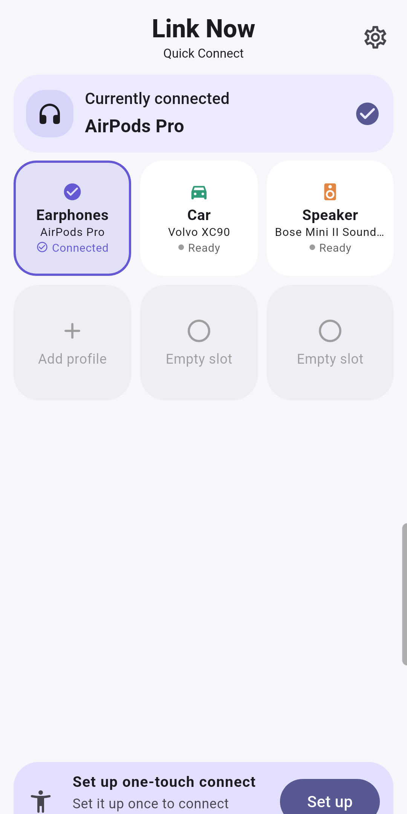

Free with ads
Link Now / Android
Switch between your familiar Bluetooth audio devices Tired of finding the same headphones and speakers in Settings? Save familiar devices in Link Now and access their connection flow from device cards. Pair the device in Android Bluetooth settings first and keep it powered on. Allow the required Nearby devices permission in Link Now, then choose a device to save. The connection helper needs separate setup; basic mode uses the system Bluetooth settings. If a device is missing, check pairing, power and Bluetooth. Connection behavior can vary by device. Free with ads. Find the Android download under Link Now on the Bonney Apps page. Video captions: “The song is ready. / The sound is in the other room.” → real device selection → “Choose where you listen.”
